本页为「信息收集」栏目汇总页，汇集了信息收集方向的核心笔记。以下为独立专题，其后为整合进来的相关短篇笔记。
独立专题
收集域名信息
知道目标域名之后，我们要做的第一件事情就是获取域名的注册信息，包括该域名的DNS服务器信息和注册人的联系信息等。
Whois 查询
Whois 简单来说，就是一个用来查询域名是否已经被注册，以及注册域名的详细信息的数据库（如域名所有人、域名注册商、域名注册日期和过期日期、DNS等）。通过域名Whois服务器查询，可以查询域名归属者联系方式，以及注册和到期时间。
- Kali下whois查询
- 域名Whois查询 - 站长之家
- Whois 爱站
- ip138
- Whois Lookup
- ICANN Lookup
- 域名信息查询 - 腾讯云
- nicolasbouliane
- 新网 whois信息查询
- IP WHOIS查询 - 站长工具
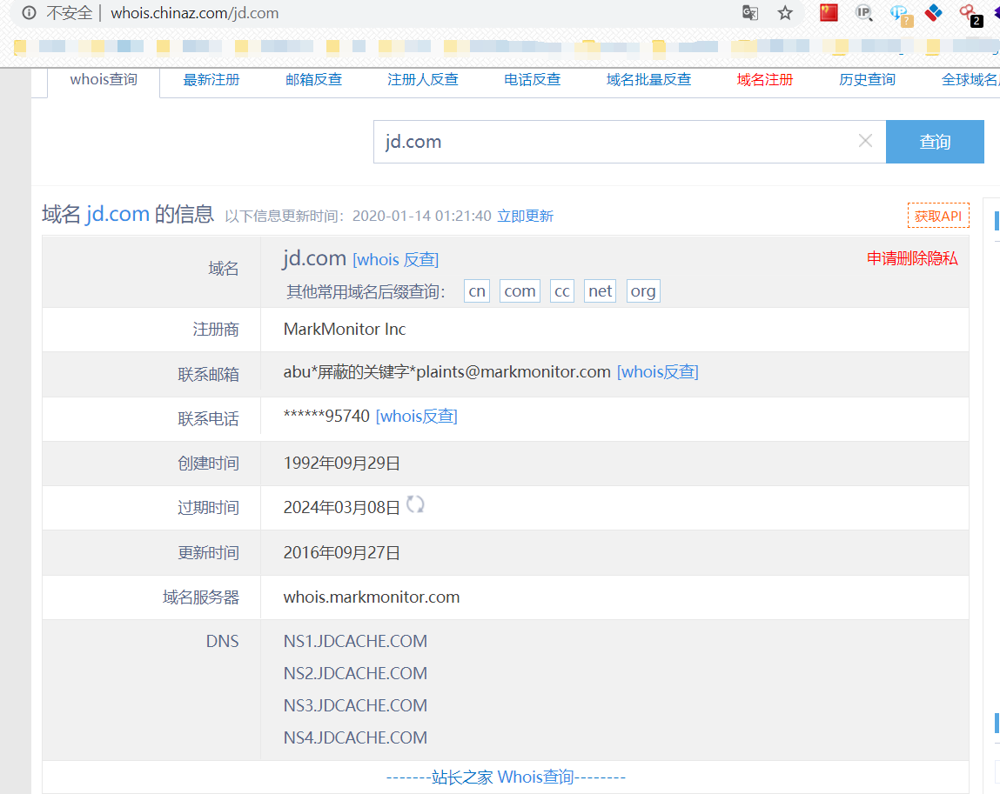
备案信息查询
国内网站注册需要向国家有关部门申请备案，防止网站从事非法活动，而国外网站不需要备案2333。
- ICP备案查询网
- CP备案查询和反查
- ICP备案查询-站长工具
- SEO综合查询-爱站
- 批量查询-站长工具
- 工业和信息化部ICP/IP/域名信息备案管理
- 美国企业备案查询
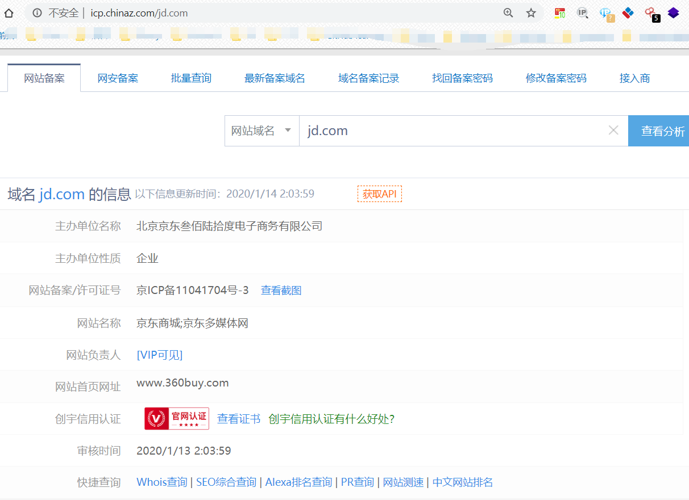
信用信息查询
- 国家企业信用信息公示系统
- 悉知-全国企业信息查询
- 信用中国-个人信用查询搜索-企业信息查询搜索-统一社会信用代码查询
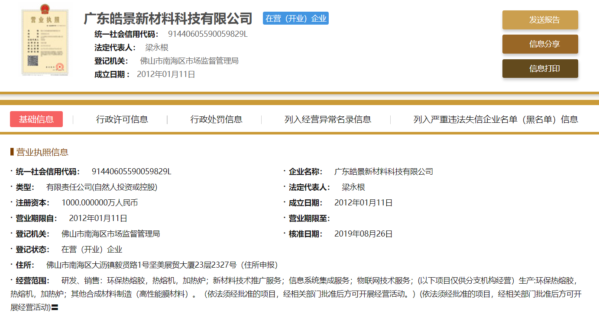
IP反查站点的站
同服IP查询:***.com
在线网站
Dnslytics
- Dnslytics地址：***.com
利用Dnslytics反查IP可以得到如下信息
IP information
Network information
Hosting information
SPAM database lookup
Open TCP/UDP ports
Blocklist lookup
Whois information
Geo information
Country information
Update information
利用Dnslytics反查域名可以得到如下信息
Domain and Ranking Information
Hosting Information{
A / AAAA Record
NS Record
MX Record
SPF Record
}
Web Information
Whois Information
浏览器插件
通过Google、FireFox等插件的使用，收集域名信息
myip.ms
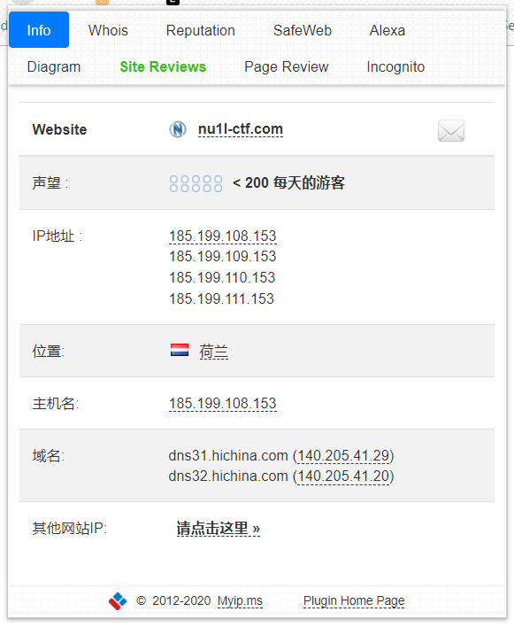
TCPIPUTILS

DNSlytics
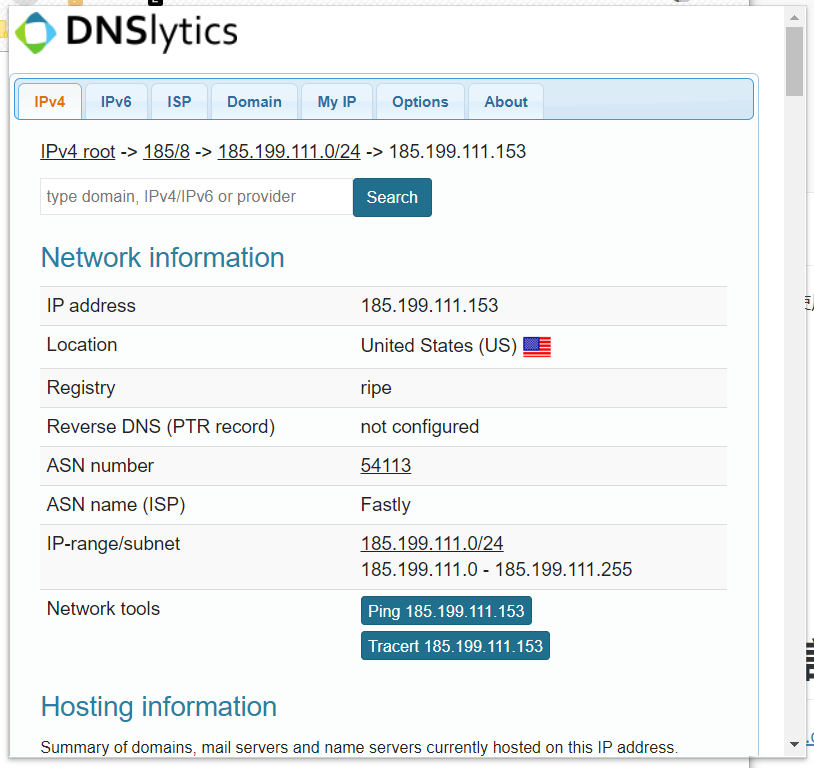
收集子域名信息
子域名也就是二级域名，是指顶级域名下的域名。假设我们的目标网络规模比较大，直接从主域入手显然是很不理智的，因为对于这种规模的目标，一般其主域都是重点防护区域，所以不如先进入目标的某个子域，然后再想办法迂回接近真正的目标，这无疑是个比较好的选择。那么问题来了，怎样才能尽可能多地搜集目标的高价值子域呢？常用的方法有以下这几种。
在线平台
第三方平台查询
主要是一些第三方网站和一些博主提供的服务
- ip138
- 站长工具
- hackertarget
- phpinfo
- t1h2ua
- dnsdumpster
- chinacycc
- zcjun
权重综合查询
-
爱站
-
站长工具
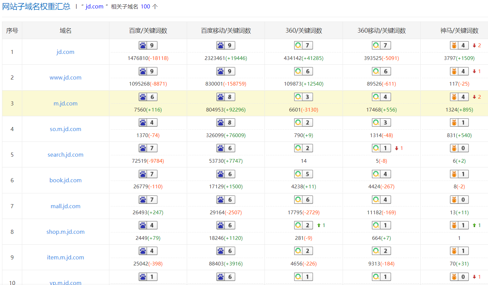
全国政府网站基本数据库
- Address Link
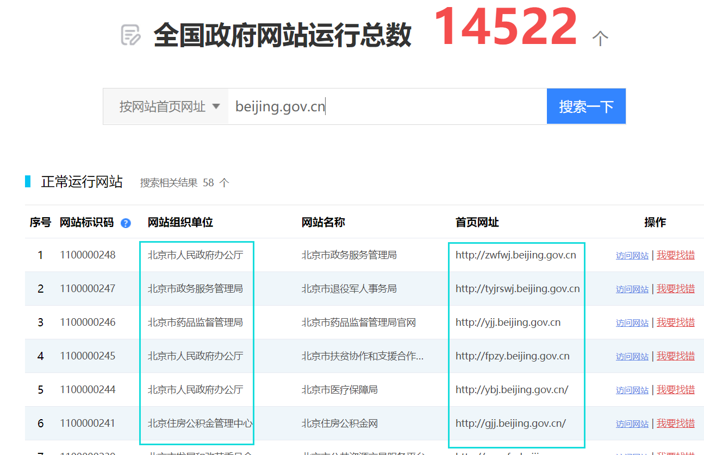
IP反查绑定域名网站
IP关联域名，大部分网站一个IP多个域名
- chinaz
- aizhan
- ***.com
- ***.com 非常牛逼的IP记录站，还能分析内链之类找出可能的IP地址，此外还会记录历史。
ssl与证书透明度
SSL证书
通过查询SSL证书，获取的域名存活率很高，这应该也是不错的思路。 SSL证书在线检测工具：***.com
证书透明度公开日志枚举
证书透明度(Certificate Transparency, CT)是证书授权机构(CA) 的一个项目，证书授权机构会将每个SSL/TLS证书发布到公共日志中。一个SSL/TLS证书通常包含域名、子域名和邮件地址， 这些也经常成为攻击者非常希望获得的有用信息。查找某个域名所属证书的最简单的方法就是使用搜索引擎搜索一些公开的CT日志。
在线第三方平台查询
- ***.com
- censys
- myssl
***.com
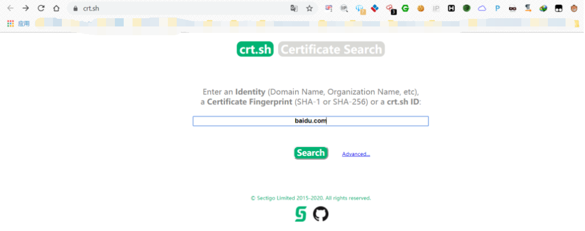
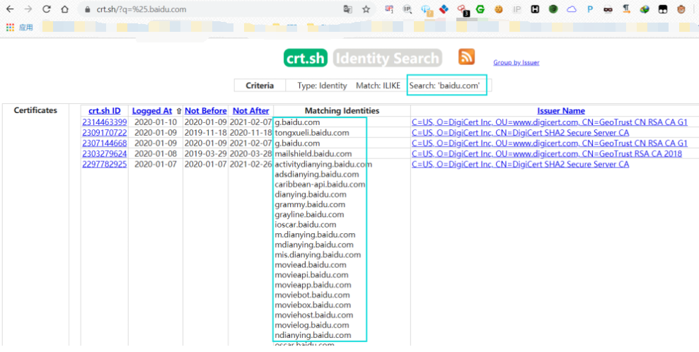
censys:
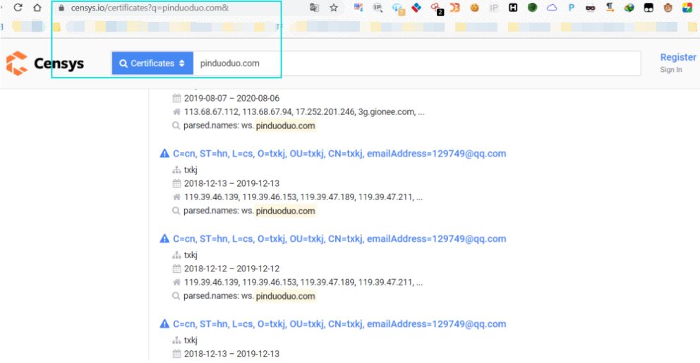
工具枚举查询
通过工具可以调用各个证书接口进行域名查询 常用工具
Findomain
Sublist3r（SSL Certificates）等
Findomain
Findomain不使用子域名寻找的常规方法，而是使用证书透明度日志来查找子域，并且该方法使其工具更加快速和可靠。该工具使用多个公共API来执行搜索：
Certspotter
***.com
Virustotal
Sublist3r
Facebook
Spyse (CertDB)
Bufferover
Threadcrow
Virustotal with apikey
项目地址：***.com
子域名收集：findomain -t ***.com
使用所有API搜索子域并将数据导出到CSV文件：findomain -t ***.com -a -o csv
DNS历史解析
- dnsdb 全球DNS搜索引擎
-
***.com 令站长十分蛋疼的DNS历史记录网站，记录了几年内的更改记录。
-
***.com 庞大的DNS历史数据库，我试了下可以查出几年内网站用过的IP、机房信息等，非常可怕。
在线网站查询
-
dnsdb
-
NETCRAFT
-
viewdns
-
threatbook
-
securitytrails
C段探测
搜索C段
什么是C段：
比如在：127.127.127.4 这个IP上面有一个网站，他是一个非常大的站几乎没什么漏洞！但是在他同C段 127.127.127.1~127.127.127.255 这 1~255 上面也有服务器而且也有网站并且存在漏洞,那么我们就可以来渗透 1~255任何一个站，之后提权来嗅探得到127.4 这台服务器的密码
- 方法一：参考GoogleHack用法
- 方法二：用k8工具，前提条件记得注册bing接口
在线查询
***.com

工具
K8_C段旁注工具6.0、nmap、IISPutScanner、小米范WEB查找器等
小米范WEB查找器：***.com
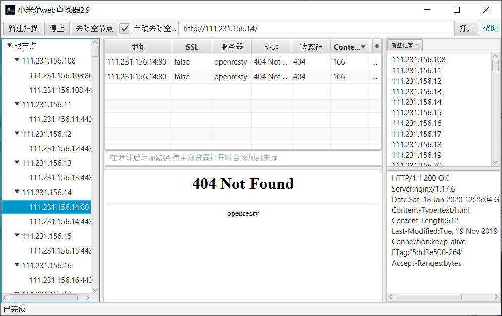
网络资产搜索引擎
Fofa、Shodan、ZoomEye 利用这些网络空间资产搜索引擎来搜索暴露在外的端口信息 利用语法搜索C段信息
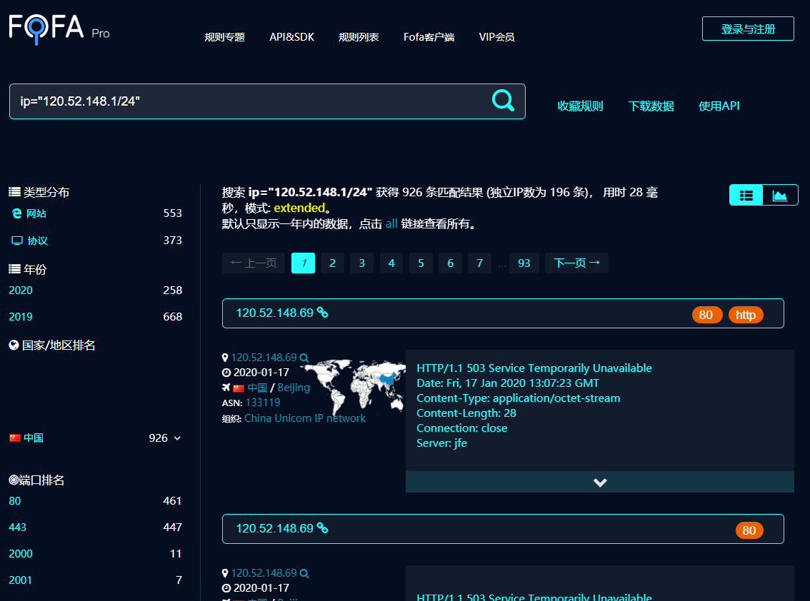
JS文件域名&ip探测
JS获取敏感接口
JSFinder
JSFinder是一款用作快速在网站的js文件中提取URL，子域名的工具。
- 安装
pip3 install requests bs4
git clone ***.com
- 使用
python3 JSFinder.py -u ***.com
python3 JSFinder.py -u ***.com -d
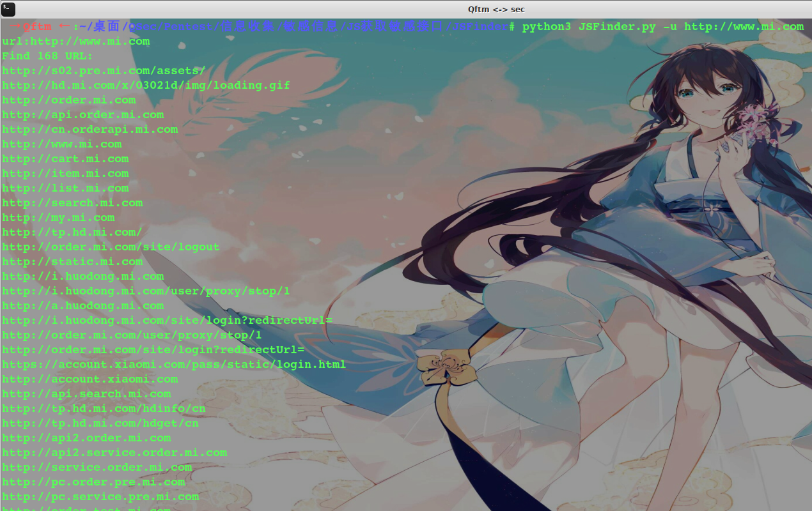
LinkFinder
该工具通过网站中的JS文件来发现服务端、敏感信息、隐藏控制面板的URL链接等有用信息，可最大化地提高URL发现效率
- 安装
git clone ***.com
cd LinkFinder
python2 setup.py install
- 使用
在线JavaScript文件中查找端点的最基本用法，并将结果输出到results.html：
python linkfinder.py -i ***.com -o results.html
CLI输出（不使用jsbeautifier，这使得它非常快）：
pyhon linkfinder.py -i ***.com -o cli
分析整个域及其JS文件：
python linkfinder.py -i ***.com -d
Burp输入（在目标中选择要保存的文件，右键单击，Save selected items将该文件作为输入）：
python linkfinder.py -i burpfile -b
枚举JavaScript文件的整个文件夹，同时查找以/ api /开头的终结点，并最终将结果保存到results.html：
python linkfinder.py -i 'Desktop/*.js' -r ^/api/ -o results.html
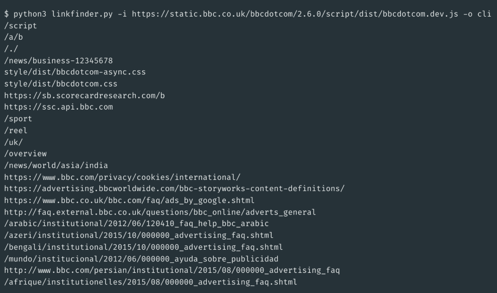
搜索引擎&情报社区
资产搜索引擎
google、shodan、FOFA、zoomeye
威胁情报
微步在线：
***.com 国内的一个工具网站，功能也是十分强大！
FOFA语法查询
- ***.com 官方详细文档; ***.com
domain="***.com"
domain=""||ip=""||host=""||title=""||header=""
protocol=“https” #搜索指定协议类型
app="phpinfo" #搜索某些组件相关系统
host="***.com/" #搜索包含有特定字符的URL
title=“powered by” && os==windows #搜索网页标题中包含有特定字符并且系统是windows的网页
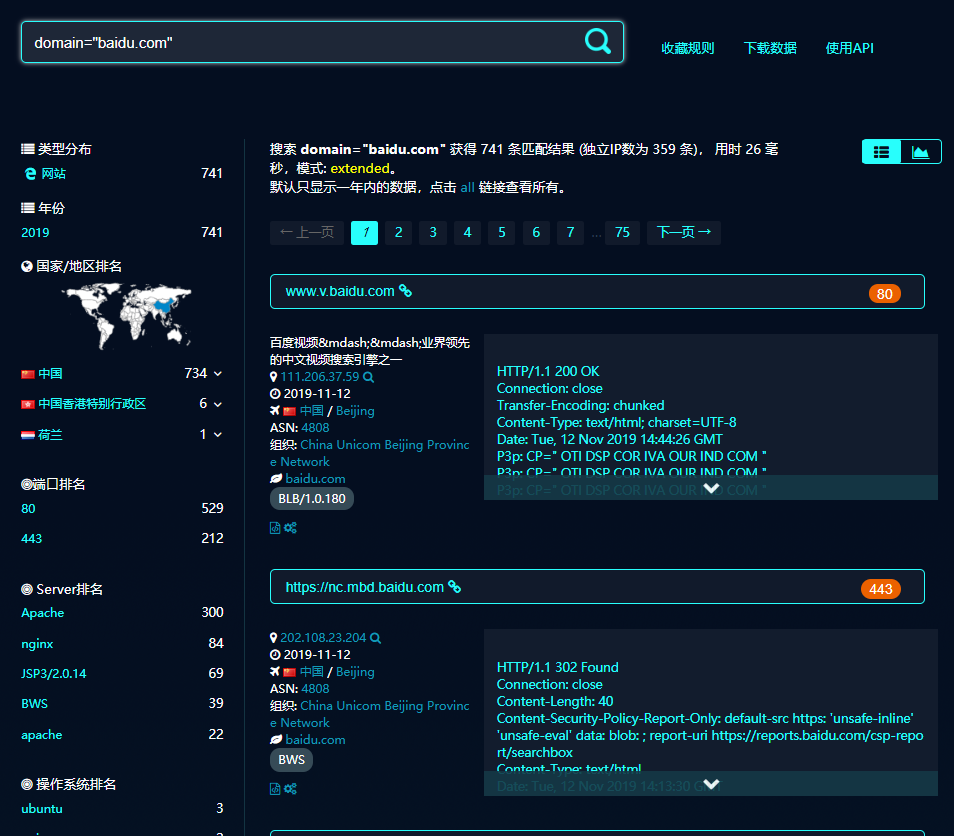
- 华为安全情报： ***.com
- 360威胁情报中心：***.com
钟馗之眼
钟馗之眼： ***.com
语法举例：
#例1：搜索使用iis6.0主机：
app:"Microsoft-IIS" ver"6.0"
#例2：搜索使weblogic主机：
app:"weblogic httpd" port:7001
#例3：查询开放3389端口的主机：
port:3389
#例4：查询操作系统为Linux系统的服务器:
os:linux
#例5：查询公网摄像头：
service:”routersetup”
#例6：搜索美国的 Apache 服务器：
app:Apache country:US
#例7：搜索指定ip信息，
ip:121.42.173.26
#例8：查询有关taobao.com域名的信息，
site:***.com
#例9：搜索标题中包含该字符的网站，
title:weblogic
收集相关应用信息
- 天眼查
- 企查查
- 七麦数据
- AppStore
微信公众号&微博
企业的另一通道，渗透相关公众号，绝对会有意外收获：不少漏洞+域名，有关Burp如何抓取微信公众号数据可参考 Burp APP抓包
天眼查
- 天眼查-商业安全工具
根据前面获取的企业名称可以获取目标企业的微信公众号、微博、备案站点、软件著作权等信息。
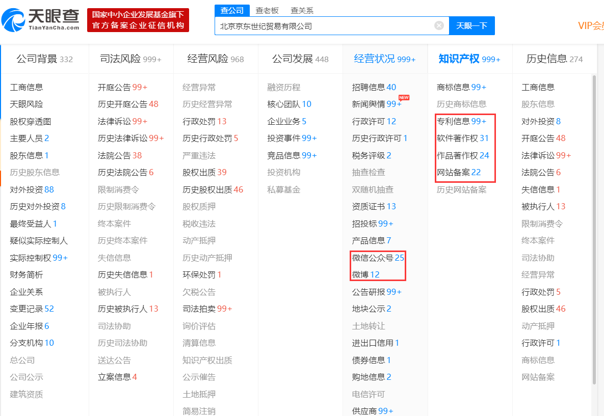
微信公众号

微博
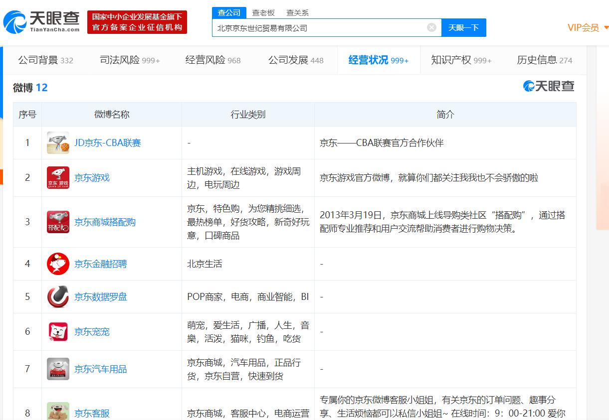
APP收集&反编译
APP
七麦数据
- 七麦数据
通过当前APP查询同开发商应用，得到目标所有APP应用
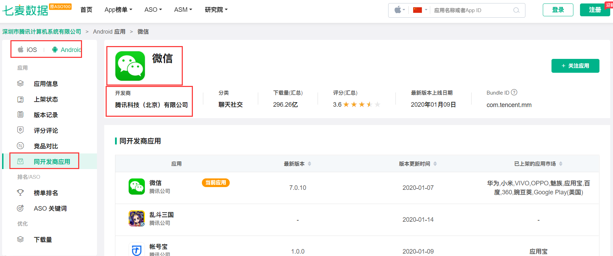
AppStore
- AppStore
通过当前APP查询同开发商应用，得到目标所有APP应用
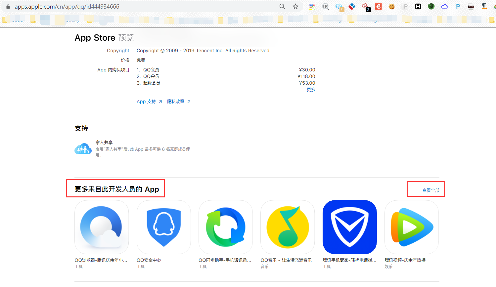
APP反编译
反编译APP进行提取相关IP地址，此外在APP上挖洞的时候，可以发现前面招式找不到的域名，在APP里面有大量的接口IP和内网 IP，同时可获取不少安全漏洞。
推荐反编译安卓app，用工具：Android Killer
收集常用端口信息
在对目标进行漏洞挖掘的过程中，对端口信息的收集是一个很重要的过程， 通过扫描服务器开放的端口以及从该端口判断服务器上存在的服务，就可以对症下药，便于我们渗透目标服务器。
所以在端口渗透信息的收集过程中，我们需要关注常见应用的默认端口和在端口上运行的服务。
端口一般是指TCP/IP协议中的端口，端口号的范围是从0-65535。
网络空间引擎搜索
shodan、FOFA、zoomeye
FOFA为例
- ***.com
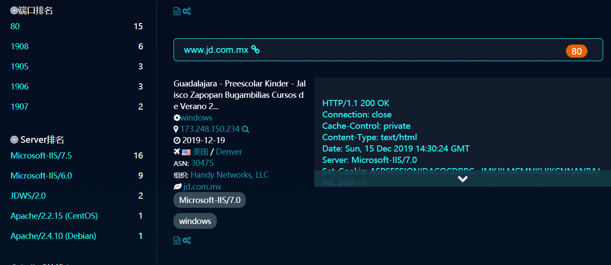
浏览器插件
通过Google、FireFox等插件的使用，收集主机端口开放信息
Shodan
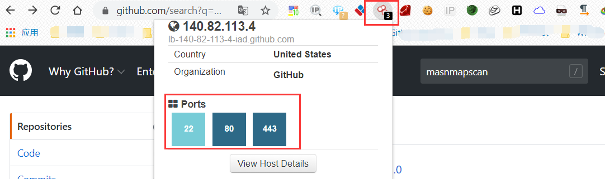
TCPIPUTILS
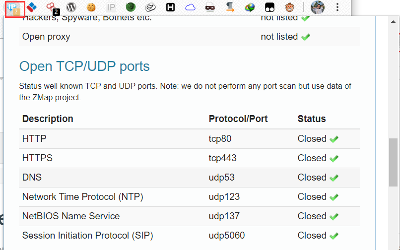
DNSlytics
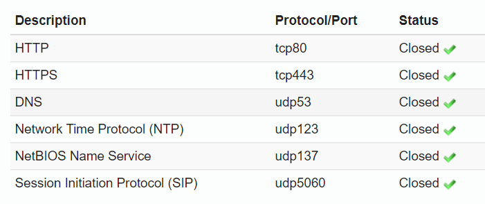
fofa-view
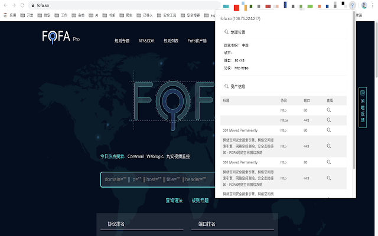
收集敏感信息
对应站点和应用敏感信息收集的越多，后续攻击利用突破口越多。
通过工具暴破相关Web源代码泄露，流程如下：

信息泄露收集可能会用到如下地址：
网盘搜索：***.com 或 ***.com 网盘密码破解：***.com 社工信息泄露：***.com、***.com 源码搜索：***.com、***.com、***.com、***.com 钟馗之眼： ***.com 天眼查： ***.com 这个有破解使用企业版查询的办法 佛法：***.com 帮助文档：***.com 微步在线：***.com 360情报中心：***.com 在线查毒：***.com
其他小方法
* 越权查询
遍历uid获得身份信息等
* whois&备案查询
通过Whois和备案查询得到网站的注册人、手机号、邮箱等（对后续的密码生成和社工很有帮助）
* Google Hacking获取公开文件
site:***.com filetype:.doc | .docx | .xls | .xlsx | .ppt | .pptx | .odt | .pdf | .rtf | .sxw | .psw | .csv
源码泄露
常见源码泄露
/.bzr/
/CVS/Entries
/CVS/Root
/.DS_Store MacOS自动生成
/.hg/
/.svn/ (/.svn/entries)
/.git/
/WEB-INF/src/
/WEB-INF/lib/
/WEB-INF/classes/
/WEB-INF/database.properties
/WEB-INF/web.xml
Robots.txt
上述源码泄露在Github上都可以找到相应的利用工具
A 网页扫描
通过扫描器扫描web站点，看是否有源码相关目录被泄漏，如有，再通过特殊工具恢复
工具如：破壳web扫描器、御剑扫描器
B github类信息泄漏
GitHub敏感信息泄露一直是企业信息泄露和知识产权泄露的重灾区，安全意识薄弱的同事经常会将公司的代码、各种服务的账户等极度敏感的信息『开源』到github中，github也是黑、白帽子、安全工程师的必争之地。
全自动监控github：***.com GitHub敏感信息泄露监控：GSIL、Github-Monitor 在GitHub中一般通过搜索网站域名、网站JS路径、网站备案、网站下的技术支持等进行敏感信息查询
C 社工方式收集
还可以在QQ群备注或介绍等，甚至混入企业qq工作群查找，这设计社工范畴了
D 源码泄露利用工具
-
.git源码泄露：***.com
-
.DS_Store泄露：***.com
-
.bzr、CVS、.svn、.hg源码泄露：***.com
目录&后台扫描
常用工具
- 7kbscan ***.com
- DirMap ***.com
- dirsearch ***.com
- Fuzz-gobuster ***.com
- Fuzz-dirbuster OWASP kali自带
- Fuzz-wfuzz ***.com
- Test404轻量后台扫描器+v2.0
- 御剑
- 破壳Web极速扫描器
个人比较喜欢使用Fuzz大法，不管是目录扫描、后台扫描、Web漏洞模糊测试都是非常灵活的。这几款fuzz工具都比较好用
基于Go开发：gobuster
基于Java开发：dirbuster
基于Python开发：wfuzz
dirbuster(win)
功能介绍 DirBuster是一款路径及网页暴力破解的工具,可以破解出一直没有访问过或者管理员后台的界面路径。 部署指南：Java运行环境+DirBuster程序包
详细教程参见： ***.com ***.com
- 双击运行DirBuster.jar
- 在URL中输入目标URL或者主机IP地址
- 在file with list of dirs/files 栏后点击browse，选择破解的字典库为directory-list-2.3-small.txt
- 将File extension中填入正确的文件后缀，默认为php，如果为jsp页面，需要填入jsp
- 其他选项不变，点击右下角的start，启动目录查找
- 观察返回结果，可点击右下角的report，生成目录报告
| 优点 | 缺点 |
|---|---|
| 敏感目录发掘能力强 | 程序运行线程小 |
| OWASP安全机构极力推荐 | 探测目录依赖字典文件 |
wfuzz(python)
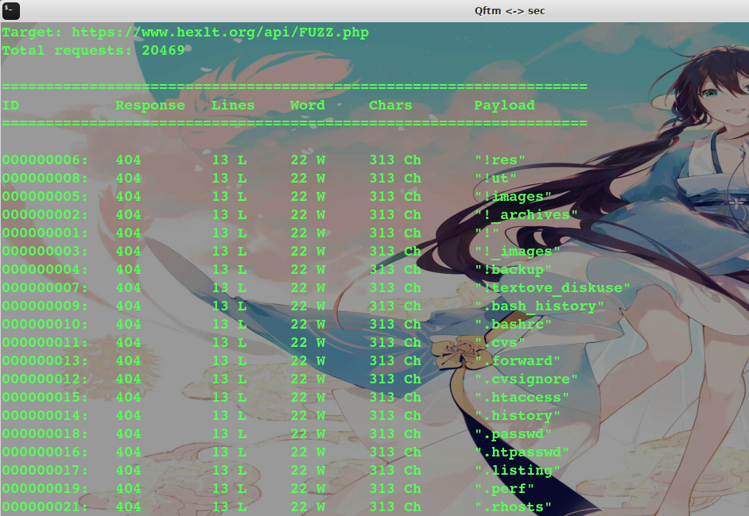
工具无论再多再好，没有一个好的字典一切都是空谈。强大字典是需要自己平时慢慢的积累。
公网网盘
公司员工可能把一些内部资料放在了公网网盘，然后被在线云网盘搜索的网站抓取了，我们就可以利用这个来对目标系统进行深入挖掘。
可以利用云网盘搜索工具搜集敏感文件，一般直接输入厂商名字进行搜索
凌风云搜索
地址：***.com
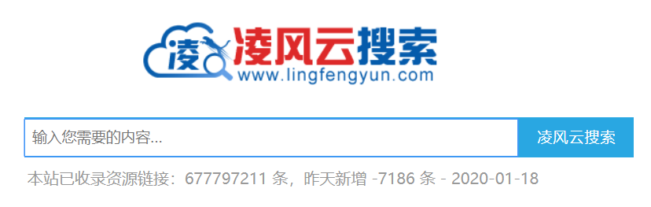
小白盘搜索
- 地址：***.com
大力盘搜索
- 地址：***.com
小不点搜索（微盘）
- 地址：***.com
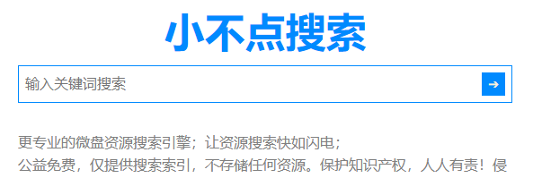
百度网盘爬取开源工具
- 地址：***.com
历史资产
wayback
wayback会记录网站版本更迭，可以获取到之前版本的网站，可能会找到一些后来删除的敏感资产信息，或者一些漏洞
平台地址：***.com
例如：腾讯2003.09.29的主页

指纹&WAF&CDN识别
Web指纹识别技术研究与优化实现：***.com 常见指纹检测的对象
1、CMS信息：比如大汉CMS、织梦、帝国CMS、phpcms、ecshop等；
2、前端技术：比如HTML5、jquery、bootstrap、pure、ace等；
3、Web服务器：比如Apache、lighttpd, Nginx, IIS等；
4、应用服务器：比如Tomcat、Jboss、weblogic、websphere等；
5、开发语言：比如PHP、Java、Ruby、Python、C#等；
6、操作系统信息：比如linux、win2k8、win7、kali、centos等；
7、CDN信息：是否使用CDN，如cloudflare、360cdn、365cyd、yunjiasu等；
8、WAF信息：是否使用waf，如Topsec、Jiasule、Yundun等；
9、IP及域名信息：IP和域名注册信息、服务商信息等；
10、端口信息：有些软件或平台还会探测服务器开放的常见端口。
指纹识别
[TOC] 在漏洞挖掘中，对目标服务器进行指纹识别是相当有必要的，因为只有识别出相应的Web容器或者CMS，才能查找与其相关的漏洞，然后才能进行相应的渗透操作。
CMS (Content Management System)又称整站系统或文章系统。常见的CMS有Dedecms (织梦)、Discuz、 PHPWEB、 PHPWind、PHPCMS、ECShop、 Dvbbs、 SiteWeaver、 ASPCMS、帝国、Z- Blog、WordPress等。
第三方平台
- 云悉
- TideFinger
- BugScaner
- 数字观星
工具
常用指纹识别工具有：御剑Web指纹识别、WhatWeb、Test404轻量CMS指纹识别+v2.1、椰树等，可以快速识别一些主流CMS
Github项目
* CMSeeK
CMSmap
ACMSDiscovery
TideFinger
AngelSword
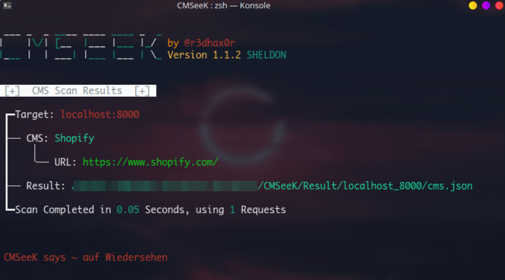
浏览器插件
通过Google、FireFox等插件的使用，收集网站结构信息
Wappalyzer
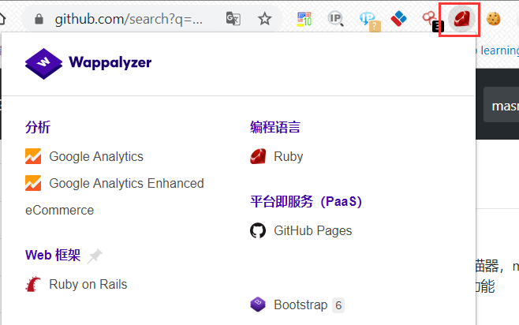
WAF识别
识别网站使用的什么WAF，可以去找相应的绕过手段
wafw00f
- 项目地址：***.com
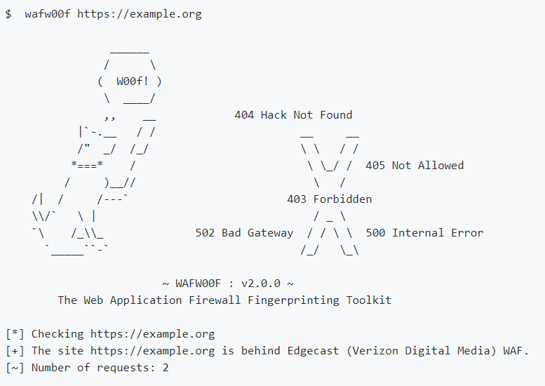
漏洞资源和社工
漏洞公共资源库
仔细分析，大胆验证，发散思维，对企业的运维、开发习惯了解绝对是有很大的帮助。可以把漏洞保存下来，进行统计，甚至炫一点可以做成词云展示给自己看，看着看着或者就知道会有什么漏洞。
国内
- 国家信息安全漏洞库
- 国家信息安全漏洞共享平台
- SeeBug
- 信息安全漏洞门户 VULHUB
- 数字观星
- NSFOCUS绿盟科技
- BugScan--漏洞插件社区
- 漏洞列表 | 教育行业漏洞报告平台（Beta）
- 工控系统行业漏洞库平台
- exp库-打造中文最大exploit库
- 乌云漏洞库
- 漏洞银行：***.com
- 360补天：***.com
国外
- Exploit-db
- Sploitus | Exploit & Hacktool Search Engine
- packetstorm
- SecurityFocus
- cxsecurity
- rapid7 Vulnerability & Exploit Database
- Most recent entries - CVE-Search
- CVE security vulnerability database. Security vulnerabilities, exploits
- CVE mitre - Search CVE List
- 美国官方工控数据库 ICS-CERT Landing | CISA
- 路由器漏洞搜索 Routerpwn - One click exploits, generators, tools, news, vulnerabilities, poc
社会工程
SheGongKu
You should know：TG、AnWang
***.com
***.com
***.com
***.com
TG-Robot:@shegongkubot
UserRegistrationInformation
通过用户的一些信息（Mail、Name、ID、Tel）查询用户注册过哪些应用
- REG007
- 检查160个社交网络上的注册情况 Check Usernames - Social Media Username Availability
- 检查用户名注册情况在500个主流网站上 KnowEm用户名搜索：社交媒体，域名和商标
- 检查用户名注册情况，同时检查注册过哪些域名 Namechk | Username, Domain, and Trademark Search | Username Registration
IPInformation
通过IP地址获取位置信息
- IP地址查询chaipip
- 高精度IP定位
- IP查询IPIP.NET
- ip2location
- maxmind
- ip138
- ***.com
SomeProjects
- social-engineer-toolkit
资产梳理
有了庞大的域名，接下来就是帮助SRC梳理资产了。域名可以先判断存活，活着的继续进行确定IP环节。根据IP的分布，确定企业的公网网段。这其实是一项不小的工程，精准度比较难以拿捏。不过通过不断实战，肯定可以琢磨出一些东西，所以有人称白帽子可能会比企业的运维更了解资产信息。资产梳
各种对渗透有帮助的平台
5.各种对渗透有帮助的平台
SRC众测平台
国际漏洞提交平台 ***.com BugX区块链漏洞平台 ***.com Gsrc瓜子src ***.com 区块链安全响应中心 ***.com CNVD国家信息安全漏洞平台 ***.com 漏洞银行：***.com 360补天：***.com 教育行业漏洞报告平台（Beta）***.com
国内平台
知道创宇Seebug漏洞平台 ***.com 工控系统行业漏洞平台 ***.com 打造中文最大exploit库 ***.com 为数不多的漏洞管理插件收集平台 ***.com 一家管理漏洞收集的平台 ***.com
国外平台
国际漏洞提交平台 ***.com xss poc ***.com oday漏洞库 ***.com 路由器漏洞库 ***.com cve漏洞平台 ***.com
威胁情报
安全数据交流平台 ***.com 华为安全情报 ***.com 威胁情报共享平台 ***.com 被黑站点统计 ***.com
社工库
微信伪造 ***.com 任意邮箱发送 ***.com和***.com 临时邮箱 ***.com 邮箱池群 ***.com 社工库 ***.com